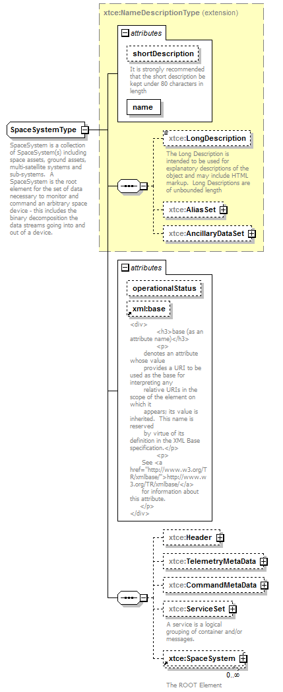
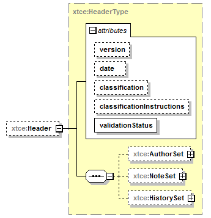
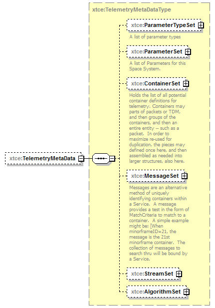
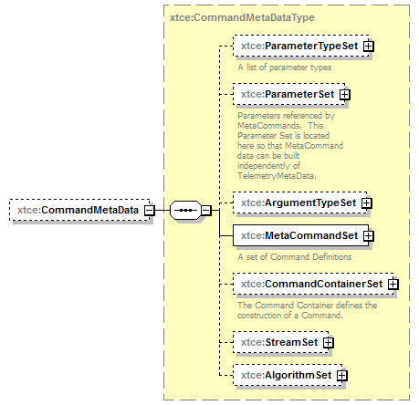
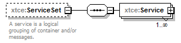
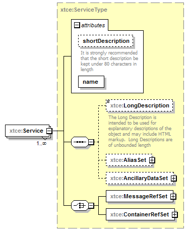

| diagram |  | ||||||||||||||||||||||||||||||||||
| namespace | http://www.omg.org/space/xtce | ||||||||||||||||||||||||||||||||||
| type | extension of xtce:NameDescriptionType | ||||||||||||||||||||||||||||||||||
| properties |
|
||||||||||||||||||||||||||||||||||
| children | xtce:LongDescription xtce:AliasSet xtce:AncillaryDataSet xtce:Header xtce:TelemetryMetaData xtce:CommandMetaData xtce:ServiceSet xtce:SpaceSystem | ||||||||||||||||||||||||||||||||||
| used by |
|
||||||||||||||||||||||||||||||||||
| attributes |
|
||||||||||||||||||||||||||||||||||
| annotation |
|
||||||||||||||||||||||||||||||||||
| source | <complexType name="SpaceSystemType" mixed="false"> <annotation> <documentation xml:lang="en">SpaceSystem is a collection of SpaceSystem(s) including space assets, ground assets, multi-satellite systems and sub-systems. A SpaceSystem is the root element for the set of data necessary to monitor and command an arbitrary space device - this includes the binary decomposition the data streams going into and out of a device.</documentation> </annotation> <complexContent> <extension base="xtce:NameDescriptionType"> <sequence> <element name="Header" type="xtce:HeaderType" minOccurs="0"/> <element name="TelemetryMetaData" type="xtce:TelemetryMetaDataType" minOccurs="0"/> <element name="CommandMetaData" type="xtce:CommandMetaDataType" minOccurs="0"/> <element name="ServiceSet" minOccurs="0"> <annotation> <documentation xml:lang="en">A service is a logical grouping of container and/or messages.</documentation> </annotation> <complexType> <sequence> <element name="Service" type="xtce:ServiceType" maxOccurs="unbounded"/> </sequence> </complexType> </element> <element ref="xtce:SpaceSystem" minOccurs="0" maxOccurs="unbounded"/> </sequence> <attribute name="operationalStatus" type="token" use="optional"/> <attribute ref="xml:base"/> </extension> </complexContent> </complexType> |
| type | token | ||
| properties |
|
||
| source | <attribute name="operationalStatus" type="token" use="optional"/> |
| diagram |  | ||||||||||||||||||||||||||||||||||||
| namespace | http://www.omg.org/space/xtce | ||||||||||||||||||||||||||||||||||||
| type | xtce:HeaderType | ||||||||||||||||||||||||||||||||||||
| properties |
|
||||||||||||||||||||||||||||||||||||
| children | xtce:AuthorSet xtce:NoteSet xtce:HistorySet | ||||||||||||||||||||||||||||||||||||
| attributes |
|
||||||||||||||||||||||||||||||||||||
| source | <element name="Header" type="xtce:HeaderType" minOccurs="0"/> |
| diagram |  | ||||||||
| namespace | http://www.omg.org/space/xtce | ||||||||
| type | xtce:TelemetryMetaDataType | ||||||||
| properties |
|
||||||||
| children | xtce:ParameterTypeSet xtce:ParameterSet xtce:ContainerSet xtce:MessageSet xtce:StreamSet xtce:AlgorithmSet | ||||||||
| source | <element name="TelemetryMetaData" type="xtce:TelemetryMetaDataType" minOccurs="0"/> |
| diagram |  | ||||||||
| namespace | http://www.omg.org/space/xtce | ||||||||
| type | xtce:CommandMetaDataType | ||||||||
| properties |
|
||||||||
| children | xtce:ParameterTypeSet xtce:ParameterSet xtce:ArgumentTypeSet xtce:MetaCommandSet xtce:CommandContainerSet xtce:StreamSet xtce:AlgorithmSet | ||||||||
| source | <element name="CommandMetaData" type="xtce:CommandMetaDataType" minOccurs="0"/> |
| diagram |  | ||||||
| namespace | http://www.omg.org/space/xtce | ||||||
| properties |
|
||||||
| children | xtce:Service | ||||||
| annotation |
|
||||||
| source | <element name="ServiceSet" minOccurs="0"> <annotation> <documentation xml:lang="en">A service is a logical grouping of container and/or messages.</documentation> </annotation> <complexType> <sequence> <element name="Service" type="xtce:ServiceType" maxOccurs="unbounded"/> </sequence> </complexType> </element> |
| diagram |  | ||||||||||||||||||||
| namespace | http://www.omg.org/space/xtce | ||||||||||||||||||||
| type | xtce:ServiceType | ||||||||||||||||||||
| properties |
|
||||||||||||||||||||
| children | xtce:LongDescription xtce:AliasSet xtce:AncillaryDataSet xtce:MessageRefSet xtce:ContainerRefSet | ||||||||||||||||||||
| attributes |
|
||||||||||||||||||||
| source | <element name="Service" type="xtce:ServiceType" maxOccurs="unbounded"/> |